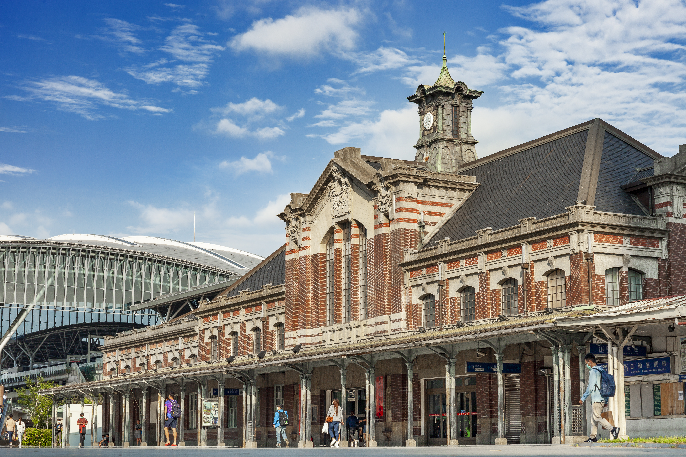

報導整理者：顏尹柔（學號：D1582257）
資料整理日期：2026 年 10 月 7 日
坐落於台中市中區的「台中舊火車站」，前身為日治時期 1905 年（明治 38 年）建立的第一代木造站房。隨著台灣南北縱貫鐵路全線通車與運量劇增，日本總督府於 1917 年（大正 6 年）改建為第二代磚造站體，成為中部地區最主要的客貨運輸核心樞紐。這座車站不僅是百年間無數旅人離家與歸鄉的共同起點，更帶動了火車站站前商圈、宮原眼科周邊商業聚集區與自由路商圈的繁榮發展。
2016 年 10 月，隨著台中鐵路高架化新站正式啟用，服務近百年的平面軌道與第二代站房正式功成身退。然而，其兼具藝術性與工藝價值的建築並未被拆除，而是以國定古蹟之姿完整保留。如今舊火車站與周邊舊第一月台、退役柴電機車頭、光華號車廂以及舊貨運倉庫串聯，轉型為兼具歷史教育與文創市集功能的「台中驛鐵道文化園區」，使百年的鐵道記憶在現代都市生活中得以持續延續。
台中舊火車站的主體建築屬於日治時期廣泛流行的「辰野式樣（自由古典風格）」，外觀以紅磚砌成，並交替鑲嵌白色洗石子水平飾帶，色彩對比鮮明搶眼。中央玄關屋頂高聳聳立著文藝復興式中央尖塔鐘樓，山牆正面飾有象徵富貴豐收的「台灣香蕉與鳳梨」泥塑圖騰雕飾，極富在地風土意涵；候車大廳內部挑高開闊，採光窗明亮且通風良好，展示出二十世紀初近代公共交通建築的恢宏氣勢與精巧工法。
【散步建議規劃說明】以下行程路線為報導整理者（顏尹柔）親自實地踏訪後所規劃的參訪動線，以順向不折返為原則，適合在下午陽光灑在紅磚立面時拍攝紀念照片，並細細品味鐵道氛圍。
| 建築/空間名稱 | 落成年份與保存定位 | 主要工法與構造特色 | 建議參觀重點與時間 |
|---|---|---|---|
| 舊站房主體與中央鐘樓 | 1917 年（大正 6 年） 國定古蹟 |
辰野金吾式樣、紅白相間紅磚造、歇山式銅皮屋頂、中央尖頂鐘塔 | 正面山牆本土花飾泥塑、挑高候車大廳（約 25-30 分鐘） |
| 舊第一月台與鑄鐵遮雨棚 | 1908 年至 1917 年陸續構築 國定古蹟附屬設施 |
大正時期鏤空鑄鐵雙柱遮雨棚、波浪形鋼構屋頂、水泥低矮月台 | 柱頭典雅渦卷鐵飾花紋、近距離觸摸老鐵道（約 20 分鐘） |
| 鐵道舊倉庫群（現文創園區） | 1930 年代前後陸續興建 歷史建築活化 |
木桁架磚石倉庫、挑高防潮空間、貨運專用挑高卸貨月台 | 紅磚山牆倉儲結構、文創展覽與鐵道紀念商品（約 30 分鐘） |

透過以下影音紀錄，更深入走進這座承載百年歷史的車站空間：
若上方內嵌播放器無法直接播放，您也可以點擊下方一般連結至 YouTube 平台觀看原始影片：
點此開啟 YouTube 觀看：台中舊火車站導覽與紀實影片
本報導之文字考證、歷史年代與建築特點整理自以下權威文獻與官方資料：